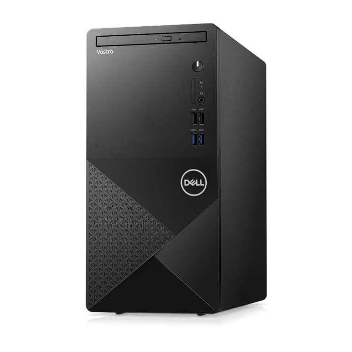
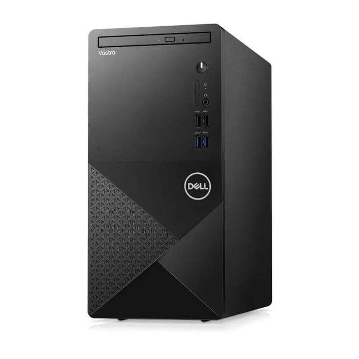

Dell Vostro 3910 Tower PC - Intel Core i5-12400 1TB HDD 4GB RAM Win 11 Pro N7530VDT3910EMEA01
Features Operating system
Available with Windows 11
Productivity-driving performance
The Vostro Tower comes with the latest 12th Gen Intel Core Processors and supports up to 64GB of memory, so you have power that fits your needs.
Give your graphics a boost with up to NVIDIA GeForce GTX 1660 SUPER, 6 GB GDDR6 discrete graphics. How about connectivity? With Wi-Fi 6, you get faster downloads, smoother streaming and easier sharing.
More flexibility. More expandability.
Have all the flexibility you need when connecting to other monitors and devices with HDMI 1.4b and a Display Port. While the HDMI 1.4b* supports FHD monitors, the Display Port can support up to 4k resolution or 3 FHD monitors*.
Don't need that much storage now? The Vostro Tower features plenty of expansion options that can be of use to you in the future. You may not need it all right now, but the options are as limitless as the growth of your business. When it comes time to expand your business horizons, your Vostro Tower will be ready for expansion as well. Increase your hard drive storage with up to 2TB SATA 7200 RPM for easy access to files, photos and videos. Elevate the performance by adding up to 1TB M.2 PCIe SSD or choose dual drives to run more programs simultaneously without sacrificing speed. Like storage, your memory can be upgraded later to align your device with your ever-growing business needs. Secure your future with flexibility.
Security for peace of mind
The Trusted Platform Module 2.0 is a commercial-grade security chip installed on the motherboard that creates and stores passwords and encryption keys. It verifies that the computer has not been tampered with before booting up and protects your data against external software attacks. A Kensington lock slot and a padlock loops provide extra physical security for your equipment.
Their latest. Our greatest.
Together, Windows 11 and Dell PCs create a best-in-class experience. An inspiring new look and feel makes for a calmer desktop. Snap assistant helps focus your workflow while desktops allow you to organize your open windows. Call, chat, and make plans come to life with Teams on Windows 11* right from your PC regardless of what computer or phone or tablet they are on.*
 
